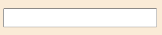
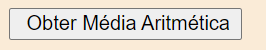
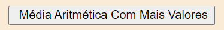
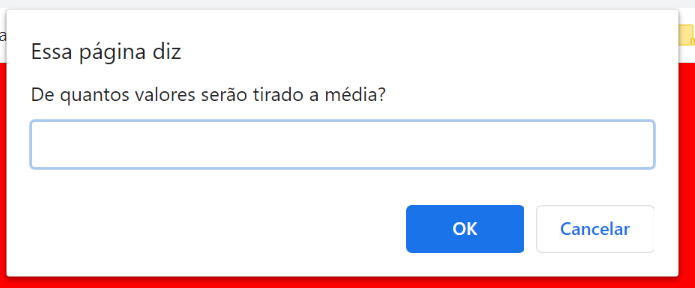
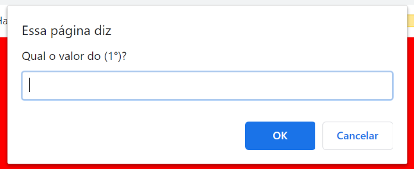
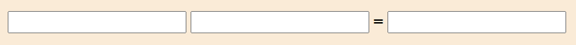
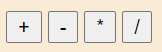

A média aritmética é calculada em cima de valores.
Esse tipo de média funciona de forma mais adequada quando os valores são relativamente uniformes.
Por ser sensível aos dados, nem sempre fornece os resultados mais adequados.
São somado todos os valores e divididos entre a quantidade deles.
Isso porque todos os dados possuem a mesma importância (peso).
Exemplo:.
2+2+3/3 = 2.333...
A ferramenta funcionará colocando os valores nas caixas de texto, usando caixas como essa:
Após concluir, clicar em "Obter Média Aritmética".
Caso você queira calcular mais que três valores, será necessario clicar no botão "Média Aritmética Com Mais Valores".
Aparecerá uma caixa assim, no qual você colocara quantos valores são:
E uma assim para colocar os valores.
A calculadora terá duas caxinhas pra colocar valores, e uma após o igual(=) para mostrar o resultado igual assim:
No qual terá botões de soma, subtração, divisão e multiplicação. Assim:
